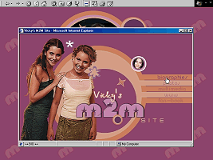
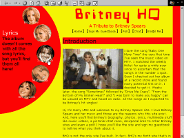
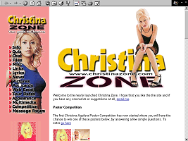

|
Welcome to the "Links" section! Here you won't find links to other Britney sites. Here are some sites that I like a lot and I want to offer them to you. If you want me to check your site and to add it to this list, just E-mail me here. |
|
Welcome to the "Links" section! Here you won't find links to other Britney sites. Here are some sites that I like a lot and I want to offer them to you. If you want me to check your site and to add it to this list, just E-mail me here. |
|  | VICKY'S M2M SITE This is my M2M fan site! It's new on the NET. M2M are two young girls from Norway, who writes their songs and have incredible voices. In the site there are pics, media, downloads and more. I hope you'll like it! |
|  | Britney HQ This is a fan Britney Site that has just been opened. Actually I don't link Britney sites but this is new on the net. Well, you'll find pics, bio, media, links, lyrics and more! Check it out! |
|  | CHRISTINA ZONE This is the Christina Zone of my friend Gareth. Very well-done site dedicated to Christina Aguilera. Offers tons of pics, info, free web e-mail, multimedia and more. Check out the latest news and buy some posters... |
WHENEVER YOU CALL MARIAH CAREY As you see, this is a Mariah Carey fan site that offer tons of pics, multimedia, discography, bio and more. You can send a Mariah postcard and to chat with other fans. The layout is nice! This site supports Britney! Don't miss. |
Copyright © 1999 Vicky's Britney Spears Site. All rights reserved.